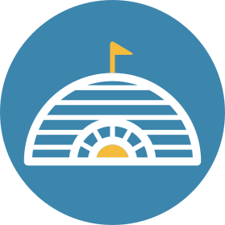
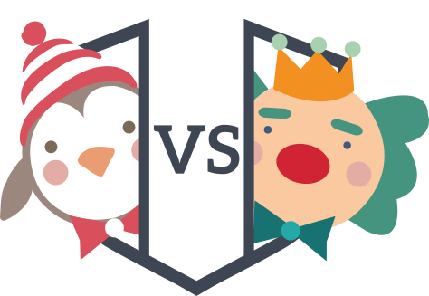

<ion-content has-header="true">
    <button ng-click="createMyBase()" >
        Create my base
      </button>
      <button ng-click="posteTourette()" >
        Pose une tour
      </button>
    <button ng-click="attaque()" >
      Attaque !
    </button>
    <button ng-click="demarrerJeux()">
      Démarrer Jeux
    </button>
    <map center="map.center" zoom="map.zoom" polylines="map.polylines"  base="base" bases-enemies="basesEnemies"></map>
    <div class="nice-body" ng-show="auth.user && !gameStart">
        <div id="new-game-placeholder" class="logo-placeholder">
          
        </div>
      <ul id="new-game">
        <li><button class="button button-positive" ng-click='demarrerJeux()'>Nouvelle partie</button></li>
        <li><button class="button button-positive">Tableau de bord</button></li>
        <li><button class="button button-positive">Paramètres</button></li>
      </ul>
      <button class="button" ng-click="logout(auth.user.uid)">Logout</button>

    </div>
    <div class="nice-body" ng-hide="auth.user">
      <div class="logo-placeholder">
        
      </div>
      <ul id="social-network">
        <li><button id="google-network" class="button button-positive icon-left ion-social-google" ng-click="login('google')">Connexion avec <span class="bold-network"> Google</span></button></li>
        <li><button id="facebook-network" class="button button-positive icon-left ion-social-facebook" ng-click="login('facebook')">Connexion avec <span class="bold-network"> Facebook</span></button></li>
        <li><button id="twitter-network" class="button button-positive icon-left ion-social-twitter" ng-click="login('twitter')">Connexion avec <span class="bold-network">Twitter</span></button></li>

          </ul>
    </div>
    
	<div id="auth-footer">
		
	</div>
</ion-content>
